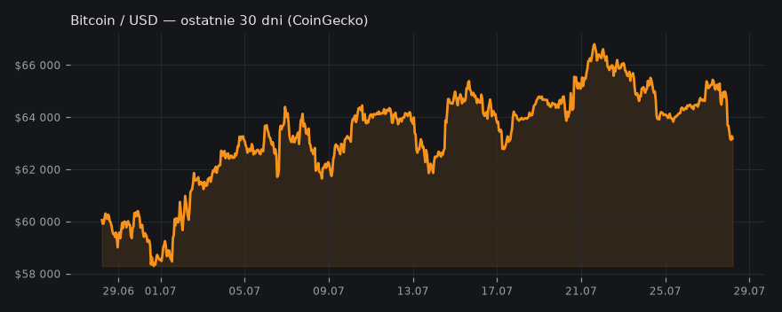
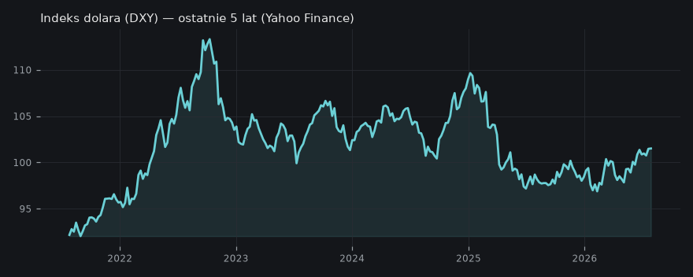
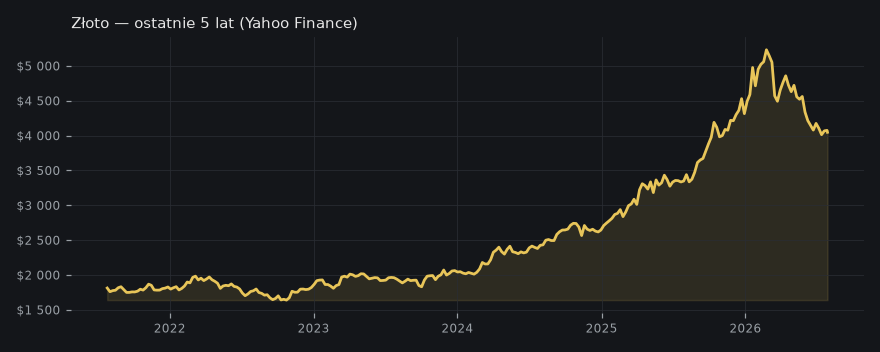
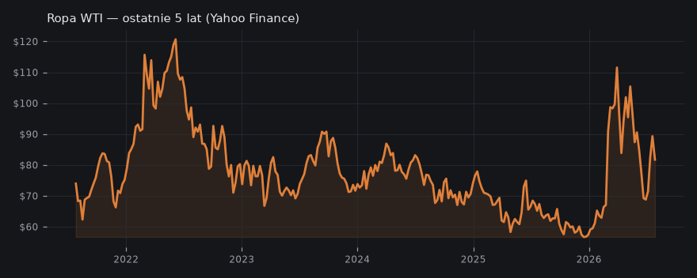
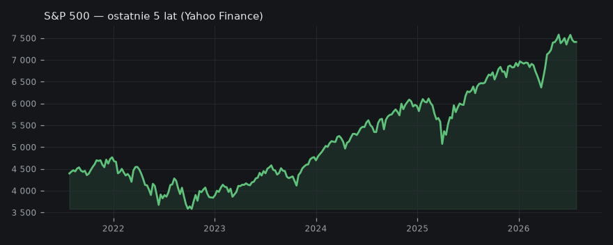

Bitcoin na krawędzi przełamania 70 000 USD – decydujące 72 godziny
Rynek oczekuje na potencjalny przełom Bitcoina powyżej 70 000 USD, a jego los ma rozstrzygnąć się w ciągu najbliższych 72 godzin, pod wpływem nadchodzących danych makroekonomicznych i raportów zysków spółek.
- Temat opiera się na jednym materiale; sprawdź kluczową tezę w źródle przed publikacją.
🟢 Ostatnie 72h to kluczowy moment dla Bitcoina – rynek czeka, czy $BTC przebije 70k, czy wyleci na rekta. --- 🔹Wg "The Wolf Of All Streets" los Bitcoina rozstrzygnie się pod presją: • Raportów zysków gigabossów (Apple, Amazon, Microsoft, Meta) • Nadchodzących danych makro i komunikatów Fed • Sytuacji na surowcach: ropa –11% w 5 dni (za Yahoo Finance), ale podaż dalej ciasna wg kanału, co może namieszać w przyszłości --- Ciekawostka: wskaźniki makro, jak inflacja, są wciąż poniżej 2% wg "The Wolf Of All Streets". Do tego PKB rośnie, a konsumpcja trzyma poziom – teoretycznie może być "soft landing", więc rynek nie musi panikować po byle strachu. --- Ale pamiętajmy, że nawet przy niższej inflacji, gospodarka oparta o dług i drukowanie hajsu zawsze wraca do punktu wyjścia. Jak nie dziś, to za rok czy dwa. --- Moje zdanie: FOMO na przełamanie 70k może być mocne, bo mentalnie to nowy paradygmat. Ale kluczowa będzie reakcja na makro – bez mega wyników i spokojnego Fedu, może być szybki rollback do wsparcia przy 60k. --- nadal: nie jest to porada inwestycyjna

🧠 Ściąga — żebyś wiedział o czym piszesz
Aktualizacja — co się zmieniło od wczoraj
Od wczoraj narracja przesunęła się z surowców i geopolityki na rynek kryptowalut — dziś kluczowy temat to potencjalne przełamanie Bitcoina powyżej 70 000 USD wg komentarzy Scott’a Melkera. W centrum uwagi są najbliższe 72 godziny, a wśród decydujących czynników wymienia się dane makroekonomiczne oraz wyniki spółek technologicznych. Tematy ropy i złota pozostają aktualne w szerokim tle rynkowym, ale dziś dominują oczekiwania wobec Bitcoina i reakcji na publikacje danych.
Kto co mówi
- The Wolf Of All Streets (Scott Melker): Scott Melker z "The Wolf of All Streets" przewiduje, że przełom Bitcoina w okolice 70 000 USD zostanie rozstrzygnięty w ciągu 72 godzin, podkreślając rolę danych makroekonomicznych, raportów zysków gigantów technologicznych (Apple, Amazon, Microsoft, Meta) oraz polityki Fed i wpływu inflacji.
Brak porównania, gdyż temat jest oparty na analizie jednego kanału.
Twarde dane
- S&P 500: 7 413 (-0.4% / 5 dni) · Yahoo Finance
- Ropa WTI (futures): 81.70 (-11.4% / 5 dni) · Yahoo Finance
- Złoto (futures): $4 047 (+0.0% / 5 dni) · Yahoo Finance
- Bitcoin: $63 187 (-3.3% / 24h) · CoinGecko
- Indeks dolara (DXY): 101.51 (+0.1% / 5 dni) · Yahoo Finance
Poziomy wg kanałów
- BTC: 70000 — przełomowy poziom cenowy
- BTC: 60000 — potencjalny poziom wsparcia po spadku
- BTC: 50000 — cena przed rozpoczęciem hossy
- GOLD: 5000 — potencjalna cena
Wykresy
- BTC/USD — wykres
- Mapa likwidacji BTC
- Bitcoin — ostatnie 30 dni
- Indeks dolara (DXY)
- Szeroki indeks dolara
- Indeks dolara (DXY) — ostatnie 5 lat

- Złoto (XAU/USD)
- Złoto — ostatnie 5 lat

- Ropa WTI
- Cena ropy WTI (EIA/FRED)
- Ropa WTI — ostatnie 5 lat

- S&P 500
- S&P 500 — ostatnie 5 lat

Co z tego wynika
Inwestorzy powinni śledzić nadchodzące raporty zysków oraz komunikaty Fed, ponieważ będą one miały bezpośredni wpływ na krótkoterminową dynamikę Bitcoina i szerokiego rynku.